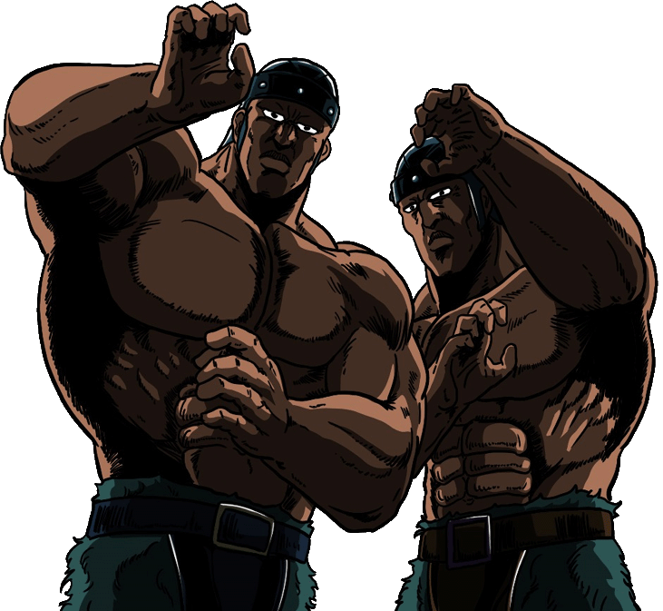

I possenti guerrieri gemelli posti a guardia dell'inespugnabile prigione di Cassandra. Custodi del leggendario Nishin Fūraiken (Colpo del Vento e del Fulmine dei Due Dei), combattono in perfetta sincronia usando fili affilati come rasoi per fare a pezzi gli intrusi. Costretti a servire il crudele Wiggle perché il loro fratellino Mitsu è tenuto in ostaggio, ritrovano la speranza nel cuore vendendo la giustizia di Kenshiro. In uno dei momenti più commoventi della saga, sacrificano le proprie vite sostenendo un ciclopico blocco di pietra, morendo in piedi per permettere a Ken, Rei e Mamiya di proseguire.